Instruments
[What the group can do in-house, what is accessed through a shared facility, and who to ask about using it. Two or three sentences.]
Materials growth
-
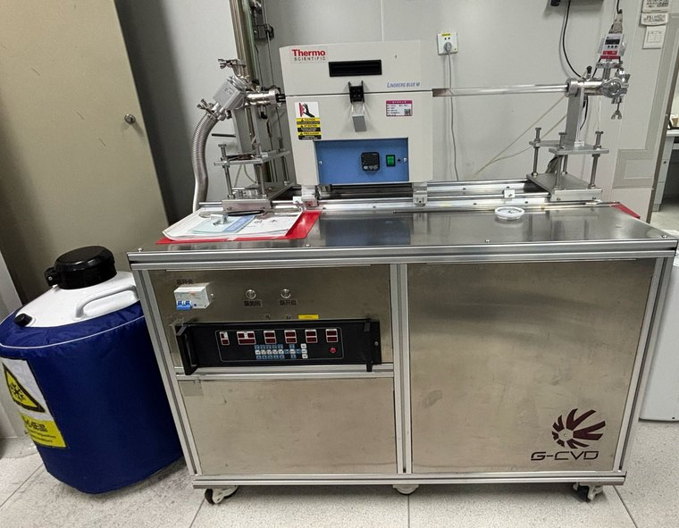
2D TMD CVD growth system
This system grows high-quality 2D TMD thin films such as WSe2 and MoS2. It precisely controls temperature, gas flow and pressure to achieve uniform, crystalline layers for the TFT device research.
-
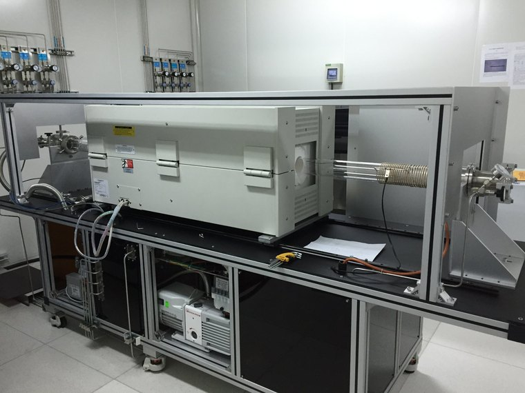
CVD Thin-Film Deposition System
Custom-built chemical vapor deposition system mounted on a modular aluminum frame, featuring a horizontal tube furnace with heated quartz process tube, gas delivery manifold with mass flow controllers, stainless steel vacuum lines, and an Edwards rotary vane pump integrated in the base cabinet. Suitable for thin-film growth and process development of semiconductor and functional materials in research environments.
-
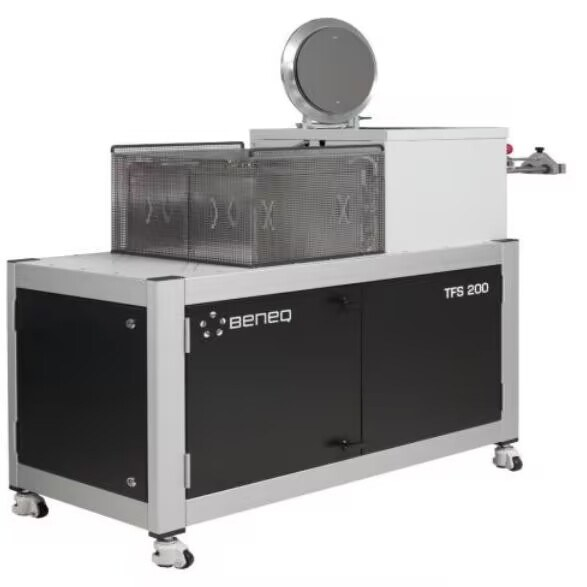
Beneq TFS 200 atomic layer deposition system
The laboratory is equipped with a TFS 200 atomic layer deposition (ALD) system manufactured by Beneq, Finland. The system’s reaction chamber can operate at temperatures of up to 500 °C. By adjusting the precursor chemistry, deposition parameters, and ALD cycle sequence, the system enables the controlled deposition of a variety of metal oxide thin films. In ALD, precursor reactions with the substrate surface or the surface of the previously deposited film are typically self-limiting, enabling precise control over film thickness and the fabrication of thin films with excellent uniformity and low surface roughness.
-
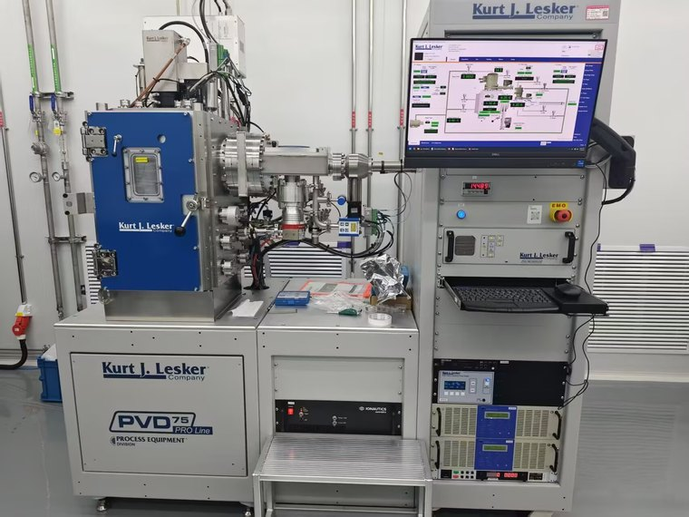
Kurt J. Lesker PRO Line PVD 75 sputtering system
The Kurt J. Lesker PRO Line PVD 75 is a high-performance magnetic sputtering film deposition system. It is specifically utilized for depositing diverse thin films, including IGO, ITO, Te, Se, Ti, and Pt. Featuring a robust multi-chamber vacuum design and precise computerized process control, this equipment ensures high-quality coatings on various substrates. It serves as an essential tool for advanced materials science and semiconductor device research.
Micro- and nanofabrication
-
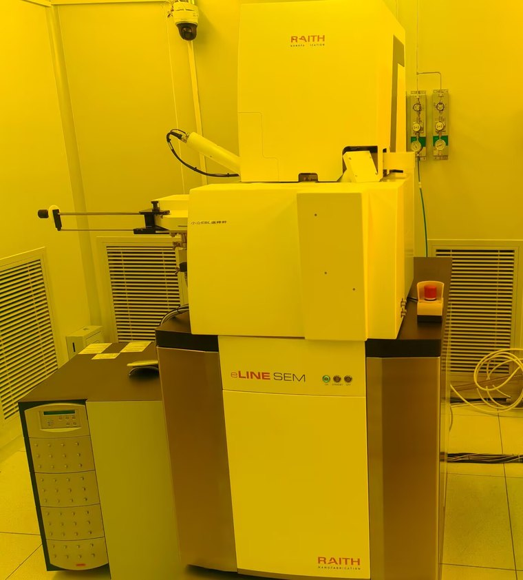
Raith electron beam lithography system
This instrument is a Raith electron beam lithography system designed for high-resolution micro- and nanofabrication. Operating at an accelerating voltage of 30 kV, it delivers nanometer-precision exposure with stable, repeatable patterning and reliable performance, making it suitable for advanced research and nanoscale device fabrication.
-
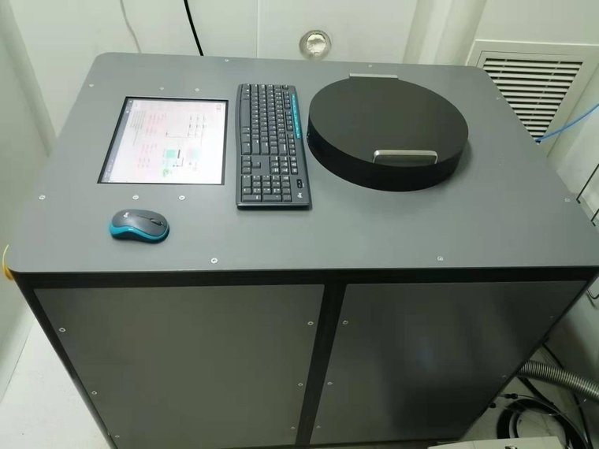
SHL 100μ-RIE etching system
SHL 100μ-RIE is an etching system specially developed for etching two-dimensional (2D) materials. Its minimum plasma ignition power can be as low as 3 W, enabling low-damage, layer-by-layer etching of 2D materials. The process gases include CF4, O2, and Ar, and the system is suitable for etching samples on wafers smaller than 4 inches.
-
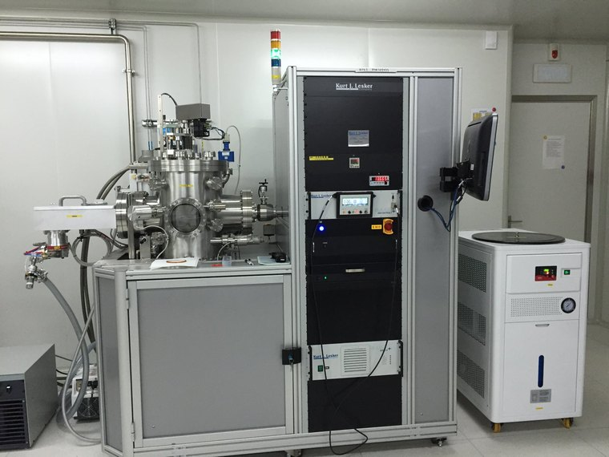
Kurt J. Lesker Electron Beam Evaporation System
High-vacuum electron beam evaporation deposition system by Kurt J. Lesker Company, featuring a stainless steel process chamber with multi-pocket e-beam gun and substrate rotation, rack-mounted control cabinet with touchscreen interface, and integrated recirculating water chiller. Suitable for thin-film deposition of metals and dielectrics in semiconductor, MEMS and optical coating applications.
-
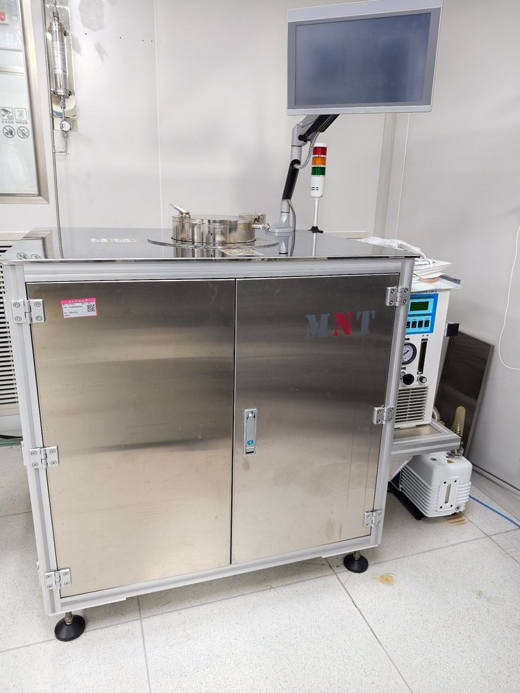
Atomic layer deposition (ALD) vacuum system
Atomic layer deposition (ALD) vacuum system grows films atomic layer by atomic layer through alternating precursor pulses into the reaction chamber and self-limiting surface reactions, enabling atomic-level thickness control, high conformality, and wafer-level uniformity. It is used for depositing high-k dielectrics and semiconductor films.
-
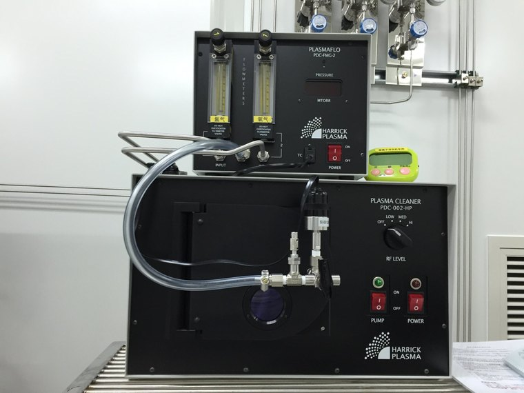
Harrick Plasma PDC-002-HP Plasma Cleaner (with PLASMAFLO PDC-FMG-2)
Benchtop RF plasma cleaning system by Harrick Plasma, featuring an expandable plasma chamber with adjustable RF power levels (LOW/MED/HI), vacuum and pump controls, paired with the PLASMAFLO PDC-FMG-2 dual-channel gas flow module (oxygen/argon) for controlled process gas mixing. Widely used for surface activation, contaminant removal and hydrophilicity treatment of samples and microfluidic devices.
-
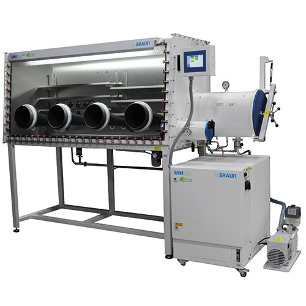
MBRAUN UNIlab pro glovebox workstation
The MBRAUN UNIlab pro glovebox workstation is capable of establishing a stable and well-regulated inert atmosphere inside the sealed chamber. It is widely adopted to carry out sample transfer, material processing and device fabrication operations for air-sensitive samples in the research of micro-nano devices.
Device Characterization
-
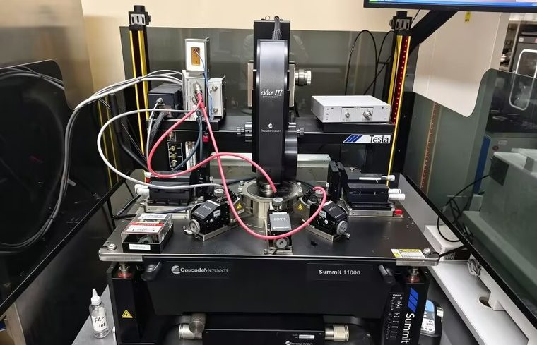
High-voltage probe station and test system
The high-voltage probe station and test system uses a Cascade Tesla power probe station, operated together with the Keysight B1505A Power Device Analyzer listed below. Together they achieve measurement precision down to 10 pA, support high-voltage modules scalable to 10 kV, and handle currents up to 1500 A, making the setup ideal for high-voltage, high-current device testing.
-
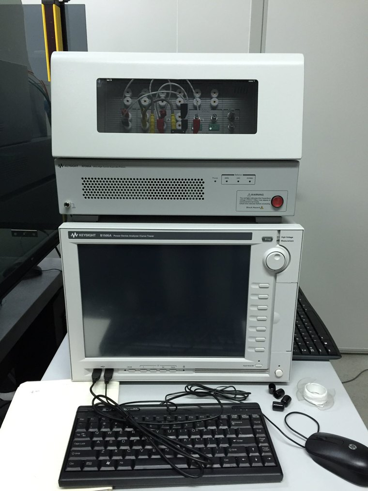
Keysight B1505A Power Device Analyzer / Curve Tracer
Precision benchtop solution for static characterization of power semiconductors, including SiC, GaN and IGBT devices. Supports measurements up to 10 kV / 1,500 A with high-resolution sourcing and detection of breakdown voltage, on-resistance, leakage current and gate characteristics. Equipped with the High Power Result Selector module; well-maintained and calibration-ready for laboratory and R&D applications.
-
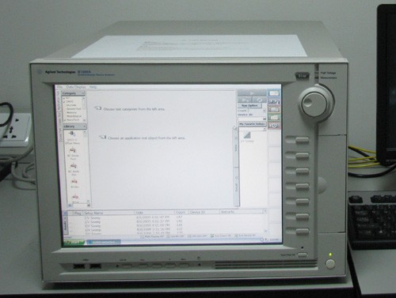
Agilent B1500A Semiconductor Device Parameter Analyzer
All-in-one benchtop solution for semiconductor device characterization, with modular slots accommodating SMU, capacitance and pulse generator units. Delivers precision DC and C-V measurements from fA-level leakage to the high-current region, with the EasyEXPERT graphical interface for test setup and analysis. Covers I-V, C-V, pulsed and resistivity measurements for device evaluation and materials research.
-
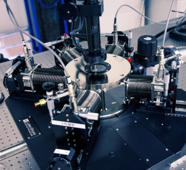
Cryogenic Vacuum Probe Station
Vacuum cryogenic probe station featuring a stainless steel chamber with multiple radial feedthrough ports, top-mounted optical microscope/camera, and vibration-isolated base platform. Enables wafer-level DC and RF electrical characterization of semiconductor devices and materials under controlled low-temperature and vacuum environments, suitable for condensed matter physics and device research.
-
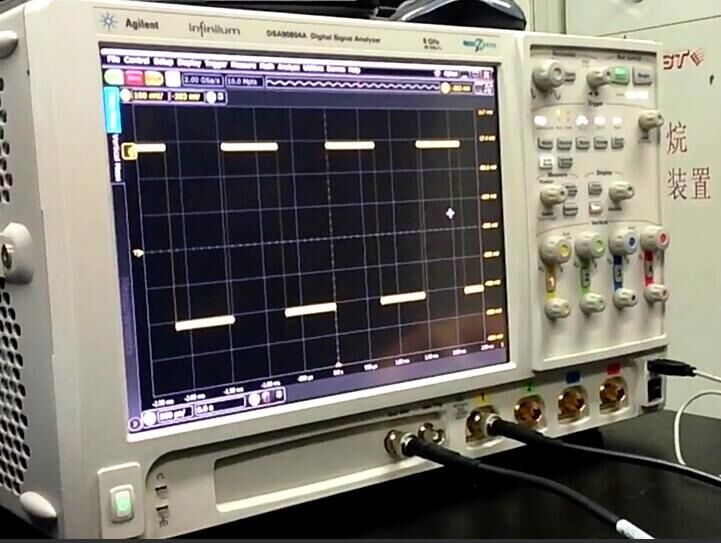
Agilent Infiniium DSA90804A Digital Signal Analyzer
High-performance 8 GHz bandwidth, 40 GSa/s real-time sampling oscilloscope with four analog channels, designed for high-speed signal integrity, jitter and timing analysis in advanced digital designs. Features Infiniium user interface with segmented memory and comprehensive trigger/probe support. Well-suited for laboratory characterization of high-speed serial, RF and clock signals.
-
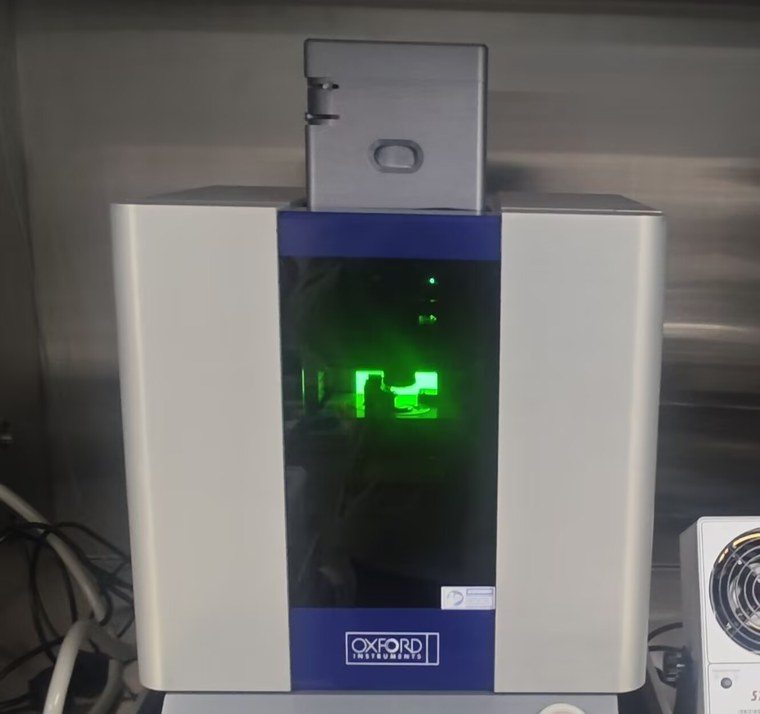
Cypher S atomic force microscope
The Cypher S (Oxford Instruments Asylum Research) is an ultra-high-resolution, fast-scanning AFM for materials and life science. Sub-15 pm height noise resolves atomic lattices, 40× faster scanning captures dynamics in seconds, and a 30 µm scanner with a broad mode set adds electrical and mechanical mapping plus blueDrive drift-free tapping.
-
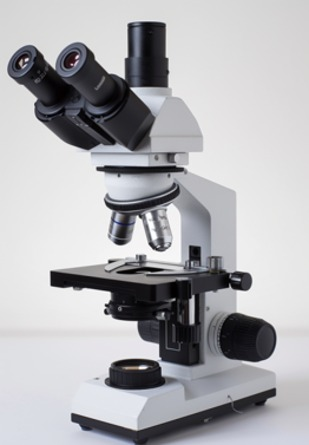
XSZ-107BN-T trinocular compound microscope
The XSZ-107BN-T trinocular compound microscope adopts Köhler illumination and coaxial coarse/fine focusing. Equipped with interchangeable objectives and a camera-accessible trinocular port, it is utilized for morphological inspection and routine observation in micro-nano device fabrication.
Access
[How internal members book time: the system used, the training required, and who signs off. One or two sentences.]
[How external academic or industry users get access: the contact, the cost model, and the turnaround to expect.]
Request time on an instrument
Write to xfli@hust.edu.cn with the instrument, the sample and the dates you need.